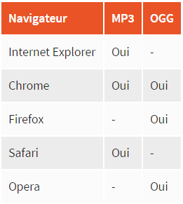
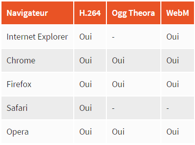

Les formats audio
Ils en existe une multitude mais les plus repandus sont le MP3, l'AAC (apple), l'OGG (linux) et WAV (a eviter car non compresse).
Petit recapitulatif de leur compatibilite avec les navigateurs :

Il faudra alors proposer plusieur format au navigateur et il decidera lequel il pourra lire.
Les formats video
c'est plus complexe, on a besoin de trois elements :
- Un format conteneur : comme une boite qui va contenir les 2 elements suivants. On le reconnait souvent avec l'extension du fichier : AVI, MP4, MKV...
- Un codec audio : meme format que precedemment.
- Un codec video : c'est le format qui va compresser les images. Les principaux a connaitre pour le web sont : "H.264" (le plus puissant mais pas totalement gratuit, a utiliser avec prudence), "Ogg Theora" (gratuit mais moins puissant, probleme de logiciel a telecharger sur windows) et "WebM" (gratuit et recent, concurrent le plus serieux de H.264 propose par google).

On remarque que le H.264 est tout le temps compatible.
Insertion d'un element audio
On utilise la balise "audio" avec les attributs suivants :
- "src" avec le nom du fichier a jouer.
- "controls" pour ajouter les boutons 'lecture', 'pause' et la bare de defilement.
- "width" avec la largeur de l'outil de lecture audio.
- "loop" pour jouer la musique en boucle.
- "autoplay" pour jouer la musique automatiquement.
- "preload" pour indiquer si la musique peut être préchargée dès le chargement de la page ou non. Avec la valeur "auto" (par defaut, le navigateur choisi), "metadata" (charge uniquement les metadonnees comme la duree) ou "none" (pas de prechargement, pour ne pas gaspiller de bande passante sur le site).
On peut placer entre les balises un message a afficher lorsque le navigateur ne gere pas cette balise.
Pour mettre plusieurs fichier de type differents on utilise la syntaxe suivante en remplacant les "" par <> :
"audio control"
"source src = "musique.mp3"
"source src = "musique.ogg"
"/audio"
Vous remarquerez qu'on ne ferme pas les balises "source" ni par "/>" ni par "/source".
Insertion d'une video
On utilise la balise "video" avec les attributs suivants :
- "poster" pour afficher une image a la place de la video tant que celle-ci n'est pas lancee. Par defaut, le navigateur prend la 1ere image de la video.
- "controls" idem audio.
- "width" idem audio.
- "height" pour la hauteur de la video.
- "loop" idem audio.
- "autoplay" idem audio.
- "preload" idem audio.
Felix Jaehn - Ain’t Nobody (Loves Me Better) ft. Jasmine Thompson :
Meme structure pour les formats video que pour les formats audio. Et meme remarques.
Par ailleurs, Les iPhone, iPad et iPod ne reconnaissent à l'heure actuelle que le format H.264 (fichier .mp4)… et uniquement si celui-ci apparaît en premier dans la liste ! Je vous recommande donc d'indiquer le format H.264 en premier pour assurer une compatibilité maximale.